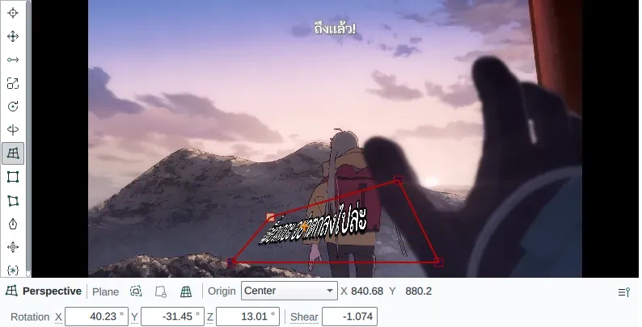
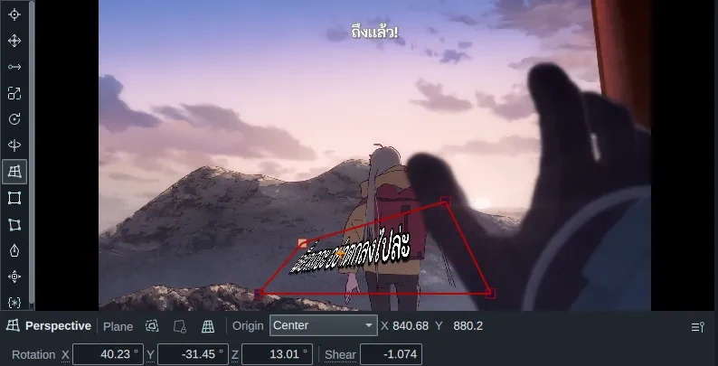
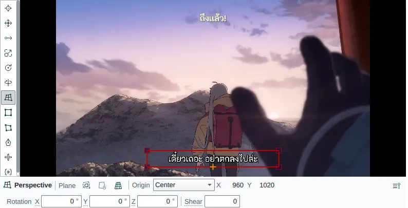
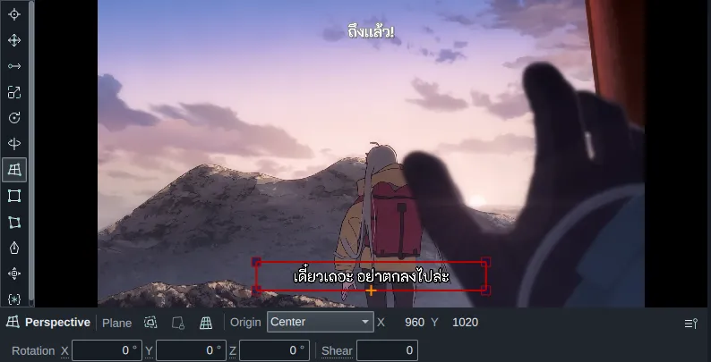

Visual tools Since 0.1.0
Position, rotate, scale and clip a line by dragging on the video. Each drag writes the matching override tags into the line.
The tools sit in the rail on the left of the Video panel. Click one, or press its key while the pointer is over the video: P for Text positioning, R for Z rotation. Pressing the key of the tool that is already on goes back to the Position pointer.
Parts of the Video panel


- 1The tool rail. Hover a tool to see its name and key.
- 2Handles of the current tool, here the corners of the perspective quad.
- 3The inspector bar: the tool's options for the active line.
- 4Exact values. Type a number, or drag across the field to scrub it.
Subtitles: Jibrill.
The tools
| Tool | Key | Writes |
|---|---|---|
| Position pointer | X | Nothing; shows the script coordinates under the pointer |
| Text positioning | P | \pos |
| Text moving | G | \move |
| Text scaling | S | \fscx \fscy |
| Text Z rotation | R | \frz |
| Text X / Y rotation | T | \frx \fry |
| Rectangle clipping | C | \clip \iclip |
| Vector clipping | V | \clip with a drawing |
| Vector drawing | D | a \p drawing |
| … |
Try a rotation
Edit the line and the preview follows. Drag the slider to see the \t animation at any moment.
Nudging with the arrow keys
While the pointer is over the video, the arrow keys move what the tool edits by one script pixel, and Shift+arrows by a tenth. With Text moving, Alt+arrows move the end point.
Over the video, the arrows nudge instead of stepping frames. Move the pointer to the Grid to step frames with them again.
Fitting text to a surface
With Perspective (Q), drag the corners of the quad onto the surface the text should sit on. HikariSub works out the rotation, shear and origin, and the inspector bar shows the values as you drag.


Subtitles: Jibrill. On the site: AV1 MP4 with an H.264 fallback, plays in view, paused with reduced motion.
Undo and cancelling
Each drag is one step in the history. Press Esc during a drag to drop it.